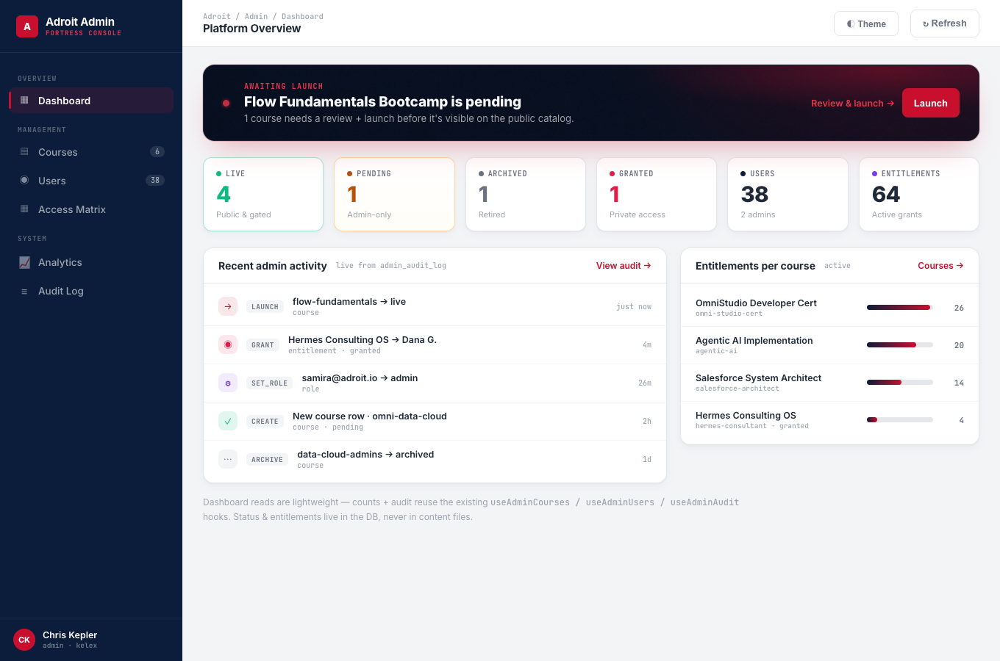
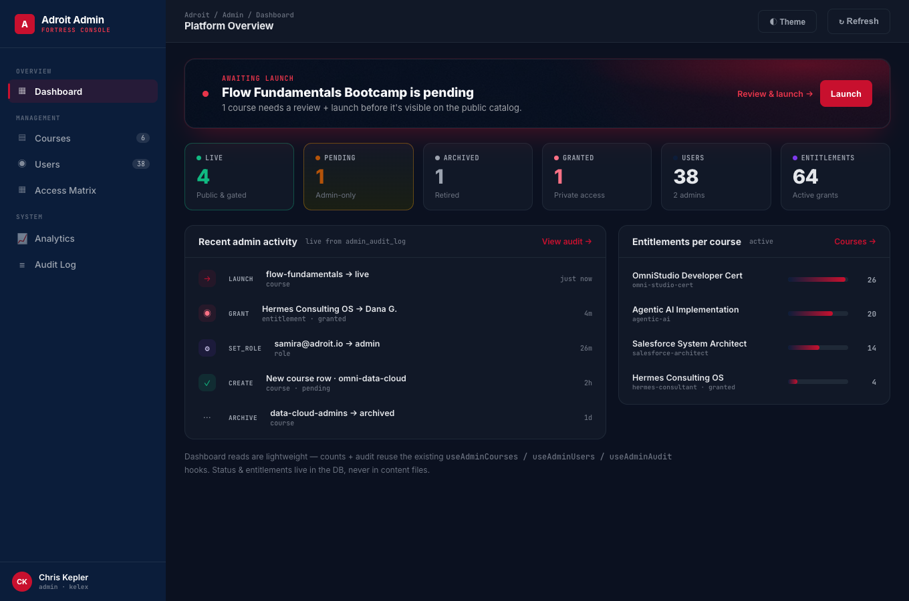
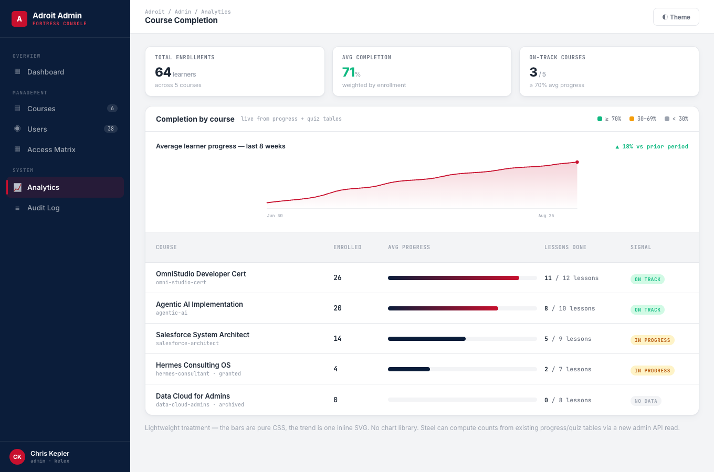
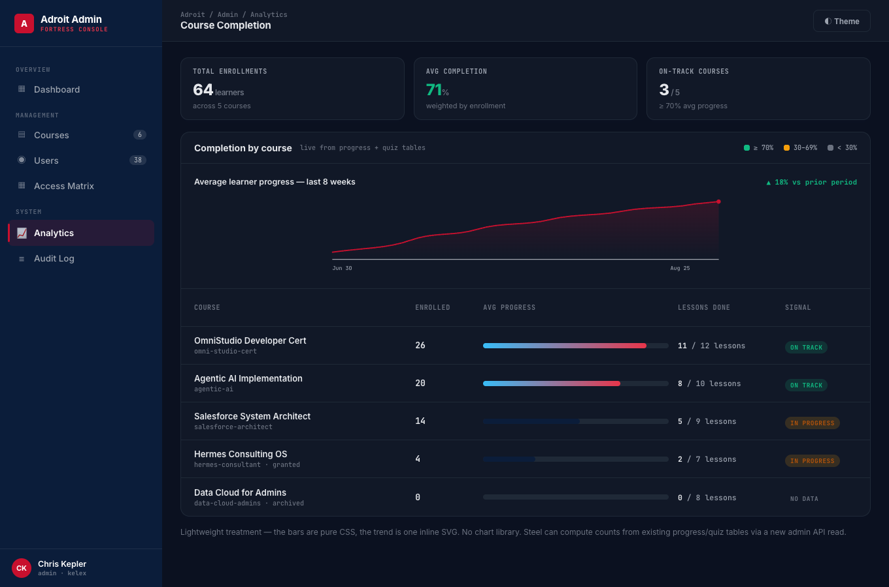
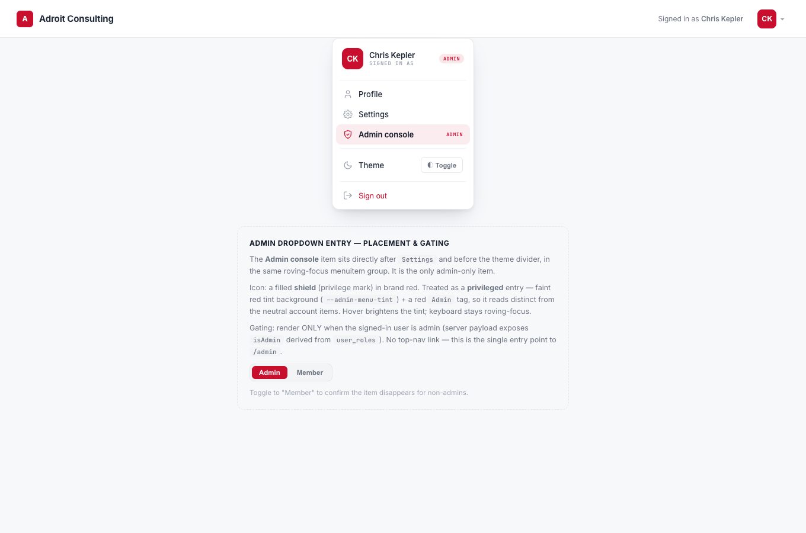
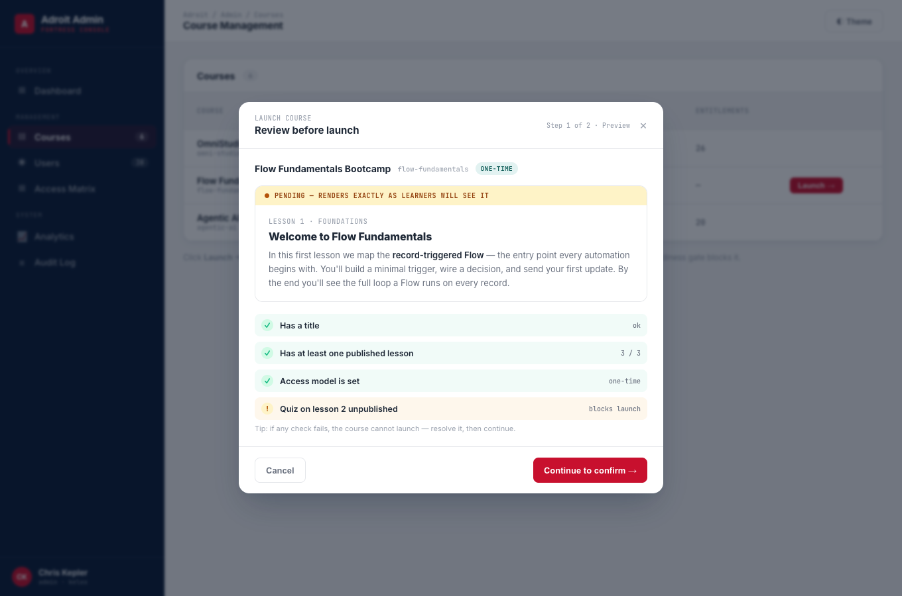

Additive design pass for the admin platform: dashboard landing, completion analytics, admin dropdown entry, and the launch preview/confirm flow. Matches the existing admin theme — nothing redesigns what ships.
The admin shell stays an Operate surface (navy sidebar + red active rule + dense tables). Each new piece picks the right archetype inside it.
Glanceable counts + audit feed + pending banner inside the Operate shell. Density beats a hero.
Compact summary strip + sparkline + table. Lightweight — no chart lib.
Review-then-confirm dialog with a readiness gate. Action affordances dominate.
These ADD to the existing --signal-*, --am-*, --admin-* system in src/app/globals.css. Nothing is replaced. Every new token has an html.dark remap.
Deep-navy urgency panel with a red radial glow + red CTA. The dashboard’s single focal hero.
Navy→red gradient for high completion. Pure CSS — no chart library. Dark remap swaps to sky→red-light.
Red shield glyph + faint red tint for the privileged avatar-menu entry. Reads distinct from neutral items.
Ready-state green vs blocked amber on the readiness checklist. Destructive confirm reuses red-dark.
Full spec + utility classes (.admin-banner, .analytics-bar > i, .admin-menu-item .shield, .launch-check) in design/v4/design-tokens-admin-v4.css.
Each mockup renders in light and dark. Captured via headless Chromium at 1360×900.






| Component | States |
|---|---|
| Dashboard banner | visible (pending > 0) · hidden (pending = 0) · pulsing dot · hover CTA |
| Stat cards | live / pending / archived / granted / users / entitlements · light + dark surfaces |
| Analytics bars | high (navy→red) · mid (flat navy) · 100% (emerald) · zero (gray) |
| Signal pill | On track (≥70%) · In progress (30–69%) · No data (<30%) |
| Avatar-menu admin item | admin visible · member hidden · hover tint brighten · roving focus |
| Launch dialog | step 1 preview · step 2 confirm · readiness ok → Continue · blocking warn → disabled · post-launch row flips to Live |
| Global | default · hover · focus · prefers-reduced-motion honored · mobile responsive (stat grid 6→3→2) |